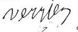

Genealogie_Complete

Graphique personnel
Autres noms
| Autres noms | Nom |
|---|---|
| Variation du nom | VEYRIER |
Parents
| Père | Date de naissance | Mère | Date de naissance |
|---|---|---|---|
 Annet VERRIER Annet VERRIER |
24 nov. 1785 |  Marie BALLET Marie BALLET |
10 nov. 1793 |
Conjoints
| Conjoint | Date de naissance | Enfants |
|---|---|---|
| Jeanne COLLAINE |
29 juil. 1839 | Joseph Marius VERRIERLouis Arnaud VERRIERXy VERRIERLouis Léon VERRIERAlphonse VERRIERLouis Antoine VERRIERJean Émile VERRIER |
Événements personnels
| Type d’événement | Date | Lieu | Description |
|---|---|---|---|
 Naissance Naissance |
16 juin 1832 | La Villetelle, Creuse, Limousin, FRANCE | |
| Mariage |
17 janv. 1861 | Privas, Ardèche, Rhône-Alpes, FRANCE | |
| Profession |
TAILLEUR DE PIERRE | ||
| Décès |
29 mars 1913 | Saint-Étienne, Département de la Loire, Rhône-Alpes, FRANCE |
Notes
| 3d. Chemin de François Verrier François Verrier part du Pays de Combraille avec ses 2 autres frères (André et Jean) et sa sœur (Françoise) vers 1852, certainement après le décès de leur père Annet et arrive vraisemblablement directement à Firminy (mariage d’André en 1852) Les 3 frères sont tailleurs de pierre. Ils sont accompagnés de Pierre Hordot, un ami de la Celle-Barmontoise (23) lui-même tailleur de pierre, qui deviendra le mari de Françoise. Ils ne figurent pas sur les recensements de Firminy (1856 et 1861), ni sur les listes électorales (1852 et 1862) sans doute parce qu’il fallait résider 3 ans dans la commune. |
| Vers 1850 François Verrier part directement dans la Loire |
| Ils fondent le Groupe des VERRIER-COLLAINE composé d’environ 8 tailleurs de pierre, dont le 1er Patriarche sera Jean Collaine : Les COLLAINE : Jean Collaine et ses 3 fils (Barthélemy Claude et Louis), Les VERRIER : François Verrier, ses 2 frères (André, Jean), et sa sœur Françoise, (mariée à Pierre Hordot, tailleur de pierre) Entre 1856 et 1865 les 2 familles participent sans doute à la construction des cités minières de la Vallée de l’Ondaine. Mais plus probablement aux ouvrages (ponts, viaducs) réalisés en vue de l’implantation du chemin de fer dans la région : En 4/1856 Barthélémy Collaine travaille sur le chemin de fer à St Martin d’Estreaux. — >Ligne La Palisse St Martin d’Estreaux Roanne (1858) Tous les Collaine se trouvent ensuite à Firminy en 1857 (au moment du service militaire de Barthélémy) — >Ligne St Etienne Firminy (1859) Puis entre 1863 et 1865 tous les Collaine et François Verrier sont à Vorey et à Chambon (Haute Loire) — >Ligne Firminy Pont Lignon Vorey/Chambon Le Puy(1863-1865) |
| 5a. La France entre 1860 et 1880 Vers Précédent Chap. 04 - Rencontre des 2 familles Cette période commence par le 2ème Empire et se termine par la 3ème République. Le Second Empire (1852-1870) : comporte 2 périodes : L’Empire autoritaire : surveillance des opposants, emprisonnements, déportations, interdiction des associations. L’Empire parlementaire avec instauration du droit syndical, du droit de grève. Ce sera également l’époque des grands travaux d’embellissements des villes (Haussmann) à Paris et dans les grandes villes de province auxquels participeront les tailleurs de pierre et maçons. La commune de 1870 (montée de l’insurrection) et la guerre de 1870 contre la Prusse entraîneront la chute de l’Empire et l’installation de La 3ème république |
| 5b. Ardèche et Marseille (1861-1867) Vers Précédent 5a. La France entre 1860 et 1880 - Privas (vers 1861) Privas se trouve dans la province du Vivarais, région montagneuse du massif central. La ville est construite sur un promontoire dominant la vallée qui fut un oppidum des helviens, peuple celte sans doute apparenté aux helvètes suisses. Le nom de Privas vient du gaulois Briva (pont, ou lieu de passage). François Verrier et Jeanne Collaine se marient en 1/1861 à Privas. Jean Collaine et sa femme résident chez leur fille à Privas. François devait travailler sur la ligne de chemin de fer (la ligne Livron-Privas est ouverte en 2/1862) ou à la construction du Pont de l’Ouvèze. JPG - 110.8 ko Privas Viaduc de l’Ouvèze - Marseille, lieu de relique de la tête de St Pons de Nice (1863-1867) On trouve dans cette ville l’Abbaye Saint Victor bâtie pendant l’empire romain sur le site d’une carrière puis d’une nécropole chrétienne. Ce sont les moines de l’Abbaye de St Victor qui vont recueillir la relique de la tête de St Pons décapité à Nice. JPG - 39 ko Marseille Abbaye St-Victor Entre 1863 et 1867 : Les Collaine et Verrier habitent tous dans le vieux Marseille "Quartier du Panier" entre l’Eglise la Charité et l’Eglise Notre-Dame des Accoules : rue des Cartiers, rue du Petits Puits, rue Poirier et Montée St Esprit JPG - 63 ko Marseille Résidences 1863-1867 François Verrier est indiqué « Café-Restaurant – 2 rue Cartier » dans l’annuaire de Marseille de 1866 et 1867, et Jeanne Collaine, sa femme est « aubergiste » sur certains actes de cette époque. JPG - 39.6 ko Marseille Annuaire 1866 Ils ont certainement participé aux travaux d’embellissement de la ville (grandes artères et Eglise) : Basilique Notre Dame de la Garde, construite sur l’ancienne Chapelle datant de François 1er Palais des Beaux Arts Palais de Longchamp (4 ans de travaux. Inauguré le 14/8/1869) Rue Impériale (rue République actuelle) percée pour relier l’ancien port au nouveau port et faire accéder les matériaux pour la construction de la Basilique. Et sans doute, au remaniement (fin du 19ème) de la flèche du clocher de l’Eglise Notre-Dame des Accoules (située juste derrière les rues Cartier et du Poirier) L’Eglise ND des Accoules, selon la tradition, serait bâtie sur les ruines du Temple de Minerve. Au 11ème siècle, elle est rattachée à l’Abbaye de St Victor. Elle fut détruite et reconstruite plusieurs fois. Il ne reste que le clocher, bâti sur une ancienne tour la Tour Sauveterre. Au cours du 19ème siècle, la flèche du clocher a été remaniée (Inscription à l’Inventaire Supplémentaire des Monuments Historiques en 1964). JPG - 26.2 ko Marseille Clocher ND des Accoules |
| Pays Niçois et Cannois (1863-1869) Vers Précédent 5b. Ardèche et Marseille (1861-1867) Les Tailleurs arrivent dans la région au moment où le Comté de Nice devient français. Ils résident à St Jeannet, puis à Nice et enfin à Cannes. Le Comté de Nice ou Pays Niçois devient territoire français en 1860. Il est traversé par la Voie Aurelia, Grande Voie méditerranéenne, construite pour relier l’ancienne l’Italie Romaine à l’ancienne Gaule comprenant : La Grande Voie Julia Augusta menant d’Italie par Cimiez à Vence et St Jeannet., et la Voie Julia Aurelia à partir du mont Cimiez jusqu’à la Péninsule Ibérique en passant par Arles (proche de Vauvert et Uchaud). - Saint-Jeannet : St Jean Baptiste décapité (1863-1864) Saint-Jeannet est située au pied du Baou (800m), sorte de gigantesque gradin-Sphinx crée par les Hospitaliers de St Jean, le Petit Saint Jean (Jeannet) en relation avec le grand St Jean à Jérusalem puis Malte. St Jeannet, le petit Jean n’est pas sans rapport avec St Jean le Baptiseur : St Jean-Baptiste, fut décapité pour avoir dénoncé le mariage du roi avec sa propre belle sœur. C’est la fille de sa belle sœur qui demanda sa tête. On fête sa naissance (le 24/6) au moment du solstice d’Eté et sa mort (fin septembre) au moment de la moisson. Les Tailleurs se trouvent vers 1863/67 à St Jeannet, ils participent certainement aux travaux d’embellissement de la ville à cette époque : 5 fontaines construites : le Verger, le Ferrage, le Planestrel, la Sauve, l’Eglise Chapelle Saint Bernardin des Pénitents blancs (2 portails datant du 19ème, 1867 est inscrit sur un des portails) Restauration du clocheton de la Chapelle Saint Jean Baptiste des Pénitents noirs Le Lavoir public construit avec les pierres calcaires tirées du Baou ou de la carrière de Fongny. Travaux de restauration de l’école commandés par le conseil syndical (dont faisait parti Clary, beau-père de Claude Collaine) JPG - 16.2 ko St Jeannet Fontaine du lavoir JPG - 39.4 ko St Jeannet Fontaine Eglise - Nice, St Pons décapité (1866-1869) Elle est traversée par Voie Julia Aurelia sur le mont Cimiez, au bord de laquelle a été construit l’Abbaye de Saint Pons à la mémoire du martyre décapité St Pons. St Pons fuit l’Italie et les persécutions des chrétiens et se réfugia à Cimiez. Il sera arrêté et refusant de sacrifier sa foi aux dieux païens il sera décapité sur le rocher qui domine le Paillon (de "paillette", parce qu’à une époque on y trouvait de l’or). Sa tête roula dans le Paillon jusqu’à Marseille où les moines de St Victor vont la recueillir. JPG - 144.8 ko Nice Abbaye St Pons Les Tailleurs en venant de Marseille à Nice, suivent-ils sans le savoir le chemin de retour de la tête de Saint Pons à partir de l’Abbaye de Saint Victor à Marseille pour remonter jusqu’à l’Abbaye de St Pons à Nice, en passant par St Jeannet où se trouve Saint Jean-Baptiste (Jean le Baptiseur), un autre décapité. Ce CHEMIN DE RETOUR serait-il un CHEMIN DE REPARATION (restaurer les Eglises) ? Entre 1866-1869, ils habitent le quartier de la Place d’Armes (emplacement actuel de la piscine Jean Bouin) et rue Victor (actuelle rue de la République). JPG - 104.2 ko Nice Résidence 1866-1869 JPG - 60.4 ko Nice Place Armes Peinture Cl Roassal 1830 Ils participent certainement aux travaux de ces quartiers : Ravalement de la façade de la Préfecture Travaux d’endiguement du Paillon Aqueduc St Thècle pour amener l’eau du Paillon et alimenter Nice en eau potable Travaux Quai Place d’Armes Et aux travaux d’embellissement de la ville : Construction Avenue Impériale (actuelle Avenue Jean Médecin) Église Notre Dame Pont sur le Var - Cannes (1870-1871) Cannes est situé de l’autre coté du Var, frontière naturelle avec le Pays Niçois. Entre 1870 et 1871, les Tailleurs habitent rue de la Miséricorde, quartier se situant derrière le Marché Fortville et proche de l’Eglise de la Miséricorde. JPG - 17.1 ko Cannes Chapelle Miséricorde Ils doivent participer aux grands travaux de Cannes de cette époque : Ouverture et élargissement de la Croisette Nombreuses villas Réaménagement du Port de Plaisance Hôtel de Ville |
| 5d. Incursion en Pays Gévaudan (1868) Vers Précédent 5c. Pays Niçois et Cannois (1863-1869) Après avoir été dans le Comté de Nice et Cannes, une partie des Tailleurs retournent à Marseille (1866/1867) puis montent s’installer en pays Gévaudan à Langogne (Lozère) vers 1868. Langogne est située dans le pays Gévaudan. C’est une citée fortifiée bâtie en cercle autour de l’église. Des petites routes montantes partent du cœur de la ville, dont 1 "la rue Haute" fut un chaînon d’une voie celtique menant à l’oppidum du Mont Milan. L’Eglise romane Saint-Gervais et Saint-Protais appelée aussi la Perle romane du Gévaudan date du 12ème siècle. C’est près de Langogne (à Hubacs) que l’on situe la 1ère victime de la Bête du Gévaudan en 7/1764. Elle est aussi appelée la ville de Gargantua, et on y célèbre le géant par des processions tous les 1er Aout depuis 1868. JPG - 33.9 ko Langogne Procession Gargantua Les Tailleurs s’installent dans la région : François Verrier et Jeanne Collaine à Langogne où nait Alphonse en 7/1868 Françoise Verrier(sa sœur) et son mari Pierre Hordot [1] à St Etienne-le-Vigan où nait leur fille Louise en 12/1867. J’imagine que les Tailleurs ont assisté le 1/18/1868 à la 1ère procession de Gargantua dans les rues de Langogne. Les Tailleurs travaillent certainement sur les nombreux ponts et ouvrages d’art construits pour faire passer la ligne de Chemin de Fer : Tronçon construit entre 1867-1870 "Grand Combes-Langogne-Langeac". La ligne Grand Combes - Villefort -Langeac a été construite entre 1867 et 1870. Les concepteurs ont choisi le tracé le plus direct empruntant les Gorges inaccessibles de l’Allier, là où aucune route ne passe entre volcans et granit de la Margeride. Le relief accidenté a nécessité de très nombreux ouvrages d’art sur les 67 km reliant Langeac à Langogne : 51 tunnels, 16 viaducs. JPG - 70.9 ko Langogne Viaduc Espezonette (à 7km) JPG - 112 ko Langogne Viaduc des Bras (à 1km) JPG - 150.1 ko Langogne Viaduc Bouchatel (à 9km) |
| 5e. Le Gard et l’Ardèche (1873-1878) Vers Précédent 5d. Incursion en Pays Gévaudan (1868) Puis les Tailleurs retournent dans la Loire en passant par le Gard ou l’Ardèche. Dans le Gard, ils résident à quelques kilomètres les uns des autres : François Verrier et Jeanne Collaine à Vauvert où naissent 2 de leurs 3 fils : Louis en 5/1873, Emile en 1875 Jean Collaine et Anne Joly, et leur fils Claude (20ans) à Uchaud (à 8km de Vauvert) Françoise Verrier et son mari Pierre Hordot à Vestric-et-Candiac (entre Vauvert - 5km et Uchaud - 2km) Barthélemy Collaine et Dorothée Maurige à Molières-le-Vigan /Cavaillac (environ à 60km) où naissent leurs filles Marthe (en 1876) et Marie-Caroline (en 1878) En Ardèche, Louis Collaine s’installe à Rochemaure en 5/1876 au moment de son mariage avec Sophie Robert. Ils travaillent sans doute sur les ouvrages réalisés pour l’implantation des lignes de Chemin de fer : Dans le Gard : Ligne Ganges-Gallargues-Le Vigan mise en service entre 1872 et 1874 : Uchaud, Vauvert et Vestric se trouvant à quelques kms de Gallargues et Molières-le-Vigan à 15km de Ganges. En Ardèche : Ligne Le Pouzin Le Teil Vögue Gagnières mise en service en 5/1876 : Rochemaure se trouve à 5 km de Le Teil. JPG - 83.5 ko Molières Viaduc Ganges JPG - 75.4 ko Rochemaure Viaduc Vogues à 35k 1878 Dans cette région, ils "laissent" leur 1er Tailleur de pierre, Jean Collaine (décédé en 2/1873 à Uchaud, Maison Falgairolle). Anne Joly, sa femme reste vivre à Uchaud et y réside encore lors du mariage de son dernier fils Louis en 1876. Uchaud et Vauvert sont à la croisée des Chemins de Compostelle et de la Grande Voie Domitienne. - Uchaud, étape sur la Voie Domitienne Uchaud, (de octo : 8ème) nommé ainsi car c’est le lieu de la 8ème borne milliaire représentait pour les Romains un Relais sur le chemin des hommes, sur la route des conquérants, axe de relation Italie-Espagne et Axe Nord-Sud. Ils y avaient installé une "Poste de la Rome Impériale". JPG - 145.7 ko Uchaud Borne miliaire On y trouve des carrières de Grés Houiller utilisée pour la pierre de taille. - Vauvert, étape sur la Voie d’Arles du Chemin de Compostelle Vauvert est un "Relais" sur la Voie d’Arles, Chemin de Compostelle reliant Arles à l’Espagne. JPG - 23 ko Vauvert Eglise - Molières-Cavaillac Molières, ville de grotte et d’anciennes carrières de calcaire. Une Filature fut construite milieu et fin du 19ème de style Roman. |
| Les Tailleurs arrivent dans la Loire et s’installent à St Etienne : - Vers 1864 Jean Verrier et Marie Duliège, - En 1876 son frère François Verrier et sa femme Jeanne Collaine, ainsi que Claude Collaine et sa fille - Suivi en 1877 de leur sœur Françoise Verrier et son mari Pierre Hordot. Puis vers 1881, François Verrier, Jeanne Collaine et leurs 3 fils (Alphonse, Émile, et Louis) se fixent à Roche la Molière , où ils achètent une carrière de pierres qu’ils exploitent. Puis les 3 fils de François Verrier retournent s’installer définitivement à Saint-Etienne (entre 1894 et 1908), sauf Louis qui repartira vers le Nord avec sa famille après la guerre de 14. |
| 6a. La France et le Forez entre 1880 et 1920 Vers Précédent Chap. 05 - Itinéraire dans le Sud-Est La France, pendant cette période va connaître la 1ère guerre mondiale et les grands mouvements ouvriers et syndicalistes. Attentats anarchistes 1894-1906 : Affaire Dreyfus 1888-1895 : Le monde ouvrier s’organise et les compagnons maçons vont former les premières corporations ouvrières et les Bourses du Travail. Anticléricalisme et Séparation des pouvoirs : 1905 Séparation Eglise et Etat 1914-1918 : 1ère Guerre Mondiale La région du Forez, région minière va être le théâtre des luttes et grèves. Les 1ers congrès de Bourses du Travail se font à St Etienne entre 1888 et 1895. En 1892 : 600 maçons et ouvriers réunis à la Bourse du Travail de St Etienne décident une grève générale de 15 jours |
| 6b. Roche la Molière (1881-1905) Vers Précédent 6a. La France et le Forez entre 1880 et 1920 Les Tailleurs retournent dans la Loire, et s’installent à Roche la Molière pour 40 ans. François Verrier devenu le 2ème patriarche après le décès de Jean Collaine en 1873, conduit ce nouveau Groupe d’environ 22/30 personnes dont 13/19 Tailleurs (les fils des premiers Tailleurs sont devenus Tailleurs eux-mêmes) : Les COLLAINE composé de 6 Tailleurs : les 3 fils de Jean Collaine et leur famille : Barthélemy (et ses 3 fils), Claude, Louis (et ses 2 fils). Les VERRIER composé de 7 Tailleurs puis 13 : François, ses 2 frères et son beau-frère (André, Jean et Pierre Hordot), les 3 fils de François (Alphonse, Louis et Emile) et plus tard les 5 fils de Louis et Alphonse, le fils d’Emile. Jeanne Collaine et François Verrier s’installent vers 1881 et jusqu’en 1905 à Roche la Molière à la Cote Durieux. Le journal "Petit Stéphanois" de 8/1881 fait paraitre un article concernant un accident à la Cote Durieux par un employé de François Verrier. JPG - 50.9 ko Petit Stephanois Accident Cote Durieux 1881 Là, François achète une écurie qu’il transforme en forge en 1889, puis une maison en 1894 et fait venir des maçons et tailleurs de pierre creusois, pour exploiter la carrière située derrière la maison (carrière dont le tréfonds appartenait aux « Mines de Firminy - Roche la Molière »). JPG - 190.2 ko Roche la Molière carrière François VERRIER En 1905, Émile achète une 2ème carrière à la Côte Durieux, près de celle de son père et construit une maison. Il revendra le tout en 1907. JPG - 156.7 ko Roche la Molière Maison Emile VERRIER Ils participent à la construction des cités minières. Jeanne s’occupe des repas, de l’hébergement et du linge des tailleurs (ce qu’elle faisait déjà à Marseille) Les cités minières construites à cette époque : [1] Cité de Lanlyre, construite en 1882, près du puits Sagnat François Verrier habite quartier Lanlyre en 1881 Cité des Valles, construite en 1892, entre Roche et le puits Grüner. Ces dernières maisons font penser à la Maison construite en 1948 par Aimé Veyrier à Noisy-le-Sec JPG - 45.5 ko Roche Cité Lanlyre JPG - 47.3 ko Roche Cité Valles JPG - 100.9 ko "Maison Veyrier" Noisy le sec En 1894, Louis travaille à la restauration de l’Eglise de St Marcel-les-Annonay en Ardèche lorsqu’il rencontre sa future femme Louise originaire de Satillieu. Peu de temps après son mariage, Louis et sa femme rejoignent François et Jeanne qui viennent d’acheter leur maison à Roche La Molière. JPG - 50.5 ko St Marcel les Annonay Eglise 4 fils de Louis Verrier (Joseph, Paul, Jean et Aimé) naissent dans la carrière de Roche la Molière entre 1895 et 1905. Tandis qu’Albert nait en 1901 à Saint-Genest-Lerpt, rue Buisson (commune voisine) ; C’est à cette époque (9/1901) que l’église de Saint-Genest sera consacrée. Louis était-il à Saint-Genest pour la construction de l’église ? La première église datant du XVe siècle s’ouvrait sur la rue Buisson. Pour construire la nouvelle église, l’architecte Boulin se servit des plans d’une église romano byzantine qu’il avait construite à Tunis. Contrairement à la tradition chrétienne, cette église a son abside orientée à l’ouest afin de s’ouvrir à l’est, côté Bourg. L’église, est consacrée le 8 septembre 1901. JPG - 11.8 ko Eglise St Genest Lerpt Vers 1905, Louis Verrier et ses frères, participent à la reconstruction de l’église de Verne (Haute Loire) sans doute sous la direction de Mr Granger (de Ste Sigolène), adjudicataire des travaux. Verne est un lieu-dit de la commune de Lapte en Haute Loire. L’église : Il ne reste que le clocher (campanile à 4 cloches) de la 1ère église construite en 1856 qui subsiste à coté de l’église actuelle, reconstruite entre 1901 et 1905. Les fonds baptismaux originaux sont l’ouvrage d’une entreprise de Verne. Campanile : clocher de forme carrée ou ronde percé d’arcades. |
| 6c. Saint-Etienne (1864-1920) Vers Précédent 6b. Roche la Molière (1881-1905) 4 familles de tailleurs vont s’installer à St Etienne entre 1864-1872/76 : Jean Verrier et Marie Duliège, François Verrier et Jeanne Collaine, Claude Collaine, Françoise Verrier et Pierre Hordot, Puis François partira vers 1881 exploiter une carrière de pierre à Roche la Molière. Et ce n’est que vers 1905 que ses 3 fils retourneront à St Etienne. JPG - 161.9 ko Résidences St Etienne 1864-1925 JPG - 118.4 ko St Etienne Residences 1864-1925 Vers 1864 arrive Jean qui s’installe avec sa famille rue Neuve. Vers 1872, il devient entrepreneur et réside 33 rue Neyron. Recensement 1872 - 29 R Neyron : JPG - 69.4 ko 1872 Recensement VERRIER Jean 29 r Neyron Extraits du journal "Le républicain de la Loire" annonçant la formation de l’entreprise de Jean Verrier avec J.P. Pardannaud (8/1875) et de la continuation de Jean Verrier seul après le décès de son associé (8/1879). JPG - 20.9 ko Journal Republicain Entreprise Jean Verrier 1875 JPG - 14.8 ko Journal Republicain Entreprise Jean Verrier 1879 Puis vers 1876 François s’installe au 23 de la rue Neyron, avec sa femme Jeanne Collaine ainsi que Claude Collaine et sa mère Anne JOLY (qui décède en 1879). Recensement 1876 - 23 R Neyron JPG - 67.1 ko 1876 Recensement 23 r Neyron p1 details JPG - 40.1 ko 1876 Recensement 23 r Neyron p2 details En 1877 : Françoise et son mari Pierre HORDOT entrepreneur, sont domiciliés 46 rue de Roanne (formation de l’entreprise GIMET-HORDOT), puis en 1885/87 3 Rue St Michel, et enfin en 1889 s’installent 33 rue Neyron. Formation Sté Gimel-Hordot 1877 JPG - 15.5 ko 1877 Archives Comm Ste HORDOT GIMEL Recensement de 1886 - 3 St Michel JPG - 58.9 ko 1886 Recensemen HORDOT Pierre 3 r St Michel Puis ce sont les 3 fils de François : A partir de 1892 : Alphonse et sa femme reprennent l’entreprise de Jean, 33 rue Neyron. Vers 1899 : Émile, sa femme et ses filles s’installent 33 rue Valbenoite Vers 1906 : Louis, sa femme, ses fils et ses parents François Verrier et Jeanne Collaine, quittent la carrière de Roche pour s’installer 10 rue du Théâtre, avec leur parent, François Verrier et Jeanne Collaine. Dans cette ville, les tailleurs laissent le 2ème d’entre eux : François Verrier (1908), puis ce sera le tour de Jeanne Collaine qui décède en 1913. Des 3 fils de François Verrier et Jeanne Collaine, 2 d’entre eux vont faire souche à St Etienne (Alphonse et Émile), tandis que le 3ème (Louis) après quelques années partira à nouveau sur les routes. Alphonse et Émile créent des Entreprises de Travaux publics à Saint-Etienne et participent à la construction d’édifices religieux et à l’urbanisation de la ville du début du 20ème siècle. Ils sont aidés par les 3 fils de Barthélémy Collaine (le frère de Jeanne) : Frédéric, Léon et Claude qui, après avoir travaillé sur les carrières de Roche ont été embauchés par Émile et Alphonse. - Alphonse Verrier reprend vers 1896, l’entreprise de Travaux publics de son oncle Jean Verrier 33 rue Neyron à St Etienne. Les Constructions Il a participé entre autre en 1906 à la construction des Hospices rue Bertholon (Hôpital de la Charité) où sa mère Jeanne Collaine est décédé 7 ans plus tard en 1913. Et à la construction de groupes scolaires, ainsi que de maisons rue Liogier pour le compte de la Caisse d’Epargne. [1] Dates Ville (départ.) Constructions Observations 1/1/1902 St Etienne(42) Maisons 1 rue Louis le Blanc habite rue Liogier (les 2 rues font un coin) 1/6/1904 Roizey (42) Groupe scolaire montant tx : 29.969 frs 26/6/1906 St Etienne (42) Hospices rue César Bertholon 1er lot maçonnerie 70.500 frs 16/7/1906 Villars (42) Ecole de filles 1er lot terrassement 36.831 frs JPG - 76 ko Jal Const. Lyon 1902 Maison L. Blanc Alphonse VERRIER JPG - 105.7 ko St Etienne 1902 Alphonse VERRIER Liogier JPG - 92.3 ko St Etienne 1902 Alphonse VERRIER Louis Blanc JPG - 17.2 ko Jal Const. Lyon 1904 Roizey Alphonse VERRIER image ? JPG - 74.6 ko Jal Const. Lyon. 1906 Hospices St Etienne Alphonse VERRIER JPG - 125.9 ko St Etienne 1906 Alphonse VERRIER Bertholon JPG - 60 ko Jal Const. Lyon. 1906 Villars Alphonse VERRIER image ? Ses activités au sein du Syndicat des Entrepreneurs Il a été aussi Secrétaire puis vice-président du Syndicat des Entrepreneurs de la Loire. Selon le Journal de Construction lyonnaise sur site AD Rhône : JPG - 143.1 ko Jal Const. Lyon 1904 Rapport Syndicat Alphonse VERRIER JPG - 65 ko Jal Const. Lyon. 1904 Syndicat Alphonse VERRIER JPG - 117.6 ko Jal Const. Lyon. 1907 Syndicat Alphonse VERRIER - Émile Verrier construit des monuments religieux à Saint-Etienne ou dans la région, des immeubles dans le cadre du percement de l’Avenue du Président Faure (actuelle Av. de la Libération), une caserne de gendarmerie rue de Roanne (actuelle rue Bergson). Les Églises Émile (selon sa fille Hélène) travaillait sur les Églises : de Marlhes en 1895, de L’Etrat en 1896, de Trévoux (01) en 1901 et la Cathédrale St Charles à St Etienne en 1921. Certaines ont été entièrement reconstruites (Trévoux et Cathédrale St Charles), pour d’autres Émile a participé soit à la rénovation (L’Etrat) soit à la construction du clocher (Marlhes). Église de L’Etrat : Église romane construite en 1850. Église de Marlhes : Église néo-gothique construite en 1888. Son clocher construit en 1895 est à 1000 m d’altitude ce qui fait qu’on l’appelle quelquefois La Basilique des Hauts Plateaux. Église St Symphorien de Trévoux : Église construite sur une ancienne église démolie en 2/1901. La nouvelle église fut inaugurée en 1904. Inscrite aux Monuments Historiques. Cathédrale st Charles Saint-Etienne : Église néo-gothique primitif construite entre 1912 et 1923. La partie du Chœur a été construit en 1930. Inscrite aux Monuments Historiques. JPG - 94.7 ko Marlhes Eglise (Clocher) JPG - 51.1 ko L’Etrat Eglise JPG - 81.5 ko Trévoux Eglise JPG - 121.3 ko St Etienne Cathédrale St Charles Les Immeubles de l’Av. de la Libération Émile, devenu entrepreneur à St Etienne intervient (en 1905/1906) principalement sur la partie située entre le 2 et le 6 Av. de la Libération. Ces immeubles sont inscrits aux Monuments Historiques. Sa fille Hélène indique : « ...Maisons bourgeoises en pierre blanche Avenue de la Libération (vers la Poste), pâté de maisons à partir de la rue St Jacques [2] en comprenant la pharmacie, jusqu’au square Violette et celles d’en face. » Dans le cadre de l’opération de rénovation urbaine de St Etienne, la percée de l’Avenue du Président Faure (actuelle Av Libération) est le grand chantier du 20ème siècle. Le projet définitif, après plusieurs années de discussion voit le jour à partir de 1902. Les constructions se font à partir de 1904-1905. 2 principaux architectes interviennent : Léon Lamazière et Paul Alfred Noulin-Lespes. JPG - 115.4 ko St Etienne Plan Aérien 2 au 8 Av Libération JPG - 76.8 ko St Etienne 2 av Libération 2 rue Martyrs Vingré 1905 JPG - 81.1 ko St Etienne 4 av Libération 1904 JPG - 105.7 ko St Etienne 6 8 av Libération 1904 La caserne de gendarmerie Rivoli La caserne construite par Émile en 1903 a été démolie en 1974 pour construire la ZAC Bergson. JPG - 266.6 ko St Etienne Gendarmerie rue de Roanne [3] Certains journaux ou documents de 1974 en parlent au moment de sa démolition. [4] La Tribune (12/1973) : Les gendarmes de Rivoli vont émigrer provisoirement à Montreynaud avant de s’installer dans une nouvelle caserne….ils y étaient installés depuis 1903 rue Bergson. Centre ville et antagonisme sociaux : l’exemple stéphanois (1973) p42 : Vers la fin des années 1970, la rénovation du Centre-Nord, Opération Bergson a permis de rénover ce quartier qui comprenait quelques ilots vétustes essentiellement occupés par les abattoirs, l’usine Schneider abandonnée depuis quelques années et la caserne de gendarmerie de Rivoli . L’opération couvre 9 ha entre les rues Bergson, Claude Odde, et Barrouin. JPG - 548 ko Partie St-Etienne Plan 1924 JPG - 99.6 ko St Etienne La Tribune 1973 caserne Rivoli 1 JPG - 101.6 ko St Etienne La Tribune 1973 caserne Rivoli 2 En 1923, une carte postale adressée par Émile à sa fille Hélène indique qu’il se trouve en Haute Marne, sans doute pour participer à des travaux de pierre de taille. - Louis Verrier donne des cours gratuits de stéréotomie [5] entre 1908-1911 à la Bourse du travail de St Etienne (4 affiches existent aux Archives de St Etienne). Peut être a-t-il participé à sa construction ? JPG - 199.5 ko St Etienne affiche cours stéréotomie 1909 JPG - 6.7 ko Extrait affiche Bourse Travail La Bourse du travail de St Etienne Elle a été construite en 3 fois : 1904 (Salle de conférence), 1906 (Aile syndicale), 1907 (Société Mutualiste). Elle est en pierre de taille de St Paul 3 Châteaux (Drôme) et le plan général est celui d’un trapèze développé sur 3 niveaux. JPG - 157.4 ko Saint Etienne Bourse du Travail Après la guerre de 14-18, Louis, sa femme et ses 5 fils reprennent la route vers le Nord. |
Sources
| Description | Référence/Commentaire | Qualité | Information | Preuve |
|---|---|---|---|---|
| http://levy.veyrier.daniele.free.fr/spip.php?article52 |
Je ne sais pas | Je ne sais pas | Je ne sais pas | |
| http://levy.veyrier.daniele.free.fr/spip.php?article52 |
Je ne sais pas | Je ne sais pas | Je ne sais pas | |
| http://levy.veyrier.daniele.free.fr/spip.php?article52 |
Je ne sais pas | Je ne sais pas | Je ne sais pas |